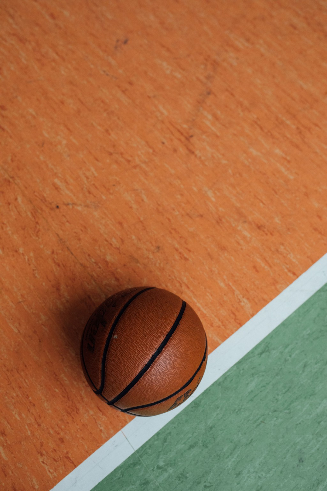
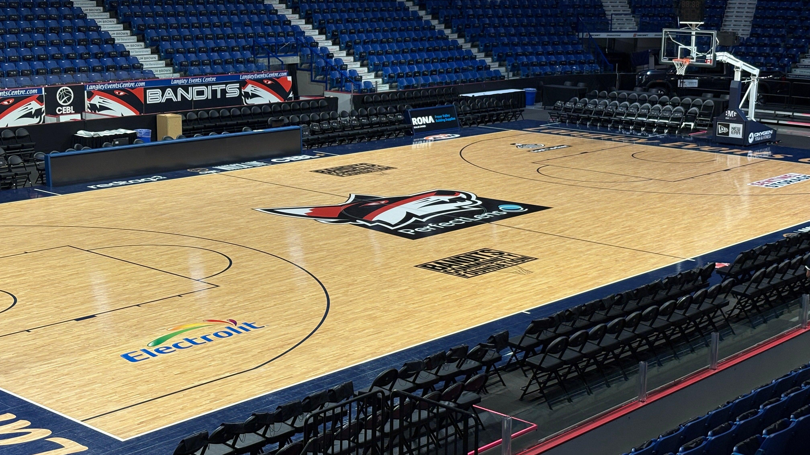

LE BALLON
À force d'être utilisé, le ballon garde des marques. Le type de terrain influence aussi son usure et les sensations pendant le jeu.
Sur un parquet, la surface est plus régulière et le ballon conserve généralement mieux son grip.
Sur le bitume, le ballon s'use plus vite et sa surface devient progressivement plus lisse.


Sur un parquet intérieur, la surface est plus régulière. Cela permet au ballon de rebondir de façon plus prévisible et aide le joueur à mieux contrôler ses dribbles.